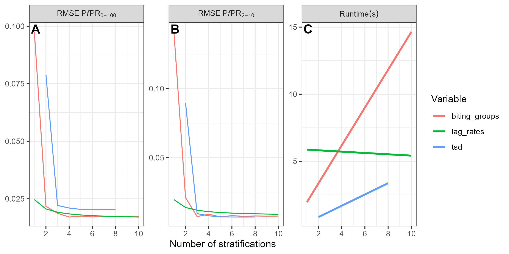
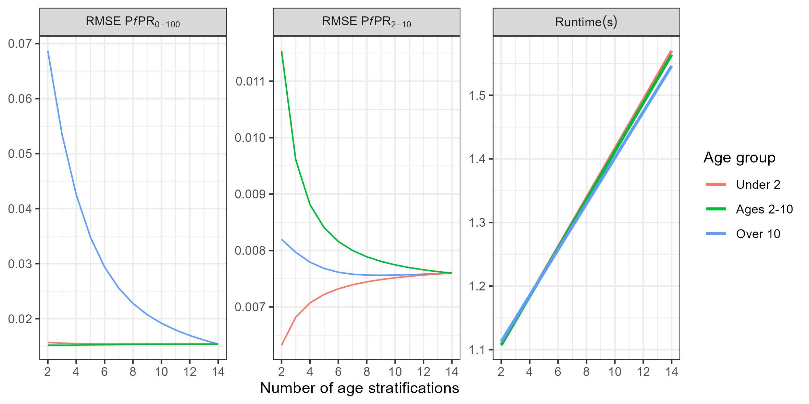
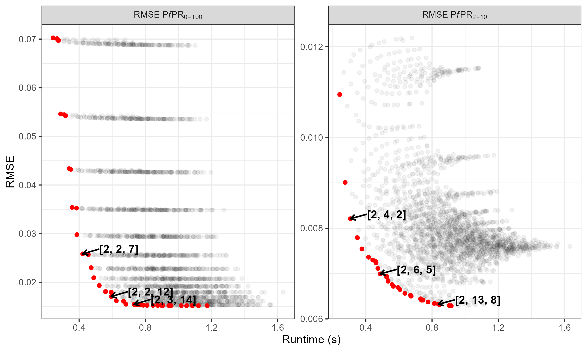

Speed/Accuracy Trade-Off Parameters
Source:vignettes/speed_accuracy_parameters.Rmd
speed_accuracy_parameters.RmdIntroduction
malariasimple is a time-discrete, compartmental model. This means that the model does not use ODEs, but rather approximates them using difference equations at small time-steps. In addition, all populations are modelled as compartments and not individually. These factors allow significant speed gains in the model, however they are approximations and outputs can deviate from more mathematically exact solutions. malariasimple contains several tuneable parameters which can be altered to improve model speed (often at the expense of mathematical accuracy) and vice versa depending on the requirements of the user. These tuneable parameters are:
- tsd (time steps per day)
- biting_groups (number of biting heterogeneity compartments)
- lag_rates (sub-compartments approximating the delay in FOI)
- age_vector (stratification of age groups)
Some parameter trade-offs are more efficient than others. In this vignette, we will demonstrate some recommended parameter combinations.
In summary
- For most use cases, the default values are a good option.
- Optimising the age_vector is less obvious. In general, you want to increase resolution within age-ranges of interest.
- If in doubt, check against identical scenario in malariasimulation.
Methods
To demonstrate variation in speed and accuracy relative to malariasimulation, malariasimple simulations were performed using a range of tunable parameter combinations. Performance was assessed in terms of model runtime and how well prevalence outputs from malariasimulation were reproduced, measured using the root mean squared error (RMSE), under the following parameterisation:
malariasimulation::get_parameters(list(
human_population = 5000000,
model_seasonality = TRUE,
g0 = 0.28,
g = c(-0.3, -0.03, 0.17),
h = c(-0.35, 0.33, -0.08),
prevalence_rendering_min_ages = c(2,0)*365,
prevalence_rendering_max_ages = c(10,100)*365)) |>
malariasimulation::set_equilibrium(init_EIR = 10)Note : Similarity to malariasimulation output may vary depending on the scenario.
Optimising tsd, biting_groups and lag_rates
Substantial gains are made in model accuracy by increasing
tsd and biting_groups to 3 and
4 respectively (as reflected in model default parameters),
after which accuracy gains are fairly modest while increases in runtime
remain linear.

Effect of varying the tunable input parameters on prevalence approximation error for ages 2–10 (A) and all ages (B), and on model runtime (C). In each case, one variable was varied while the other two were held fixed at relatively high values (tsd = 8, lag_rates = 10, biting_groups = 4).
Optimising the age_vector
The age_vector parameter details how many age categories the human population is divided into, as well as the size of each category. Optimising this parameter is slightly more complex and depends on depends on what you are trying to fit to. As a general rule, you want to increase stratification within the age range you are interested in.
In the plot below, the effect of increasing age stratification is compared across the ranges 0–2 years, 2–10 years, and 10–100 years. In this example, increasing stratification within the 2–10 year age range leads to substantial improvements in the accuracy of prevalence estimates for ages 2–10, but provides only limited improvement for prevalence across all ages.
Interestingly, in this scenario, increasing age stratification below age 2 reduces accuracy for prevalence in children aged 2–10. One possible explanation is that the bias introduced by coarser age stratification offsets another inherent bias in the model. The overall error remains small, but it may still be useful to carry out a sensitivity analysis to check whether the same pattern occurs in a given application.

Effect of varying the age_vector s on prevalence approximation error for ages 2–10 (A) and all ages (B), and on model runtime (C). In each case, one variable was varied while the other two were held fixed at 15 stratifications. Non-age parameters are set at model defaults
In general, more stratification leads to better approximations, but some combinations are better than others. In the plot below, all possible combinations of stratifications under 2, 2-10, and over 10 between 1 and 14 are shown in grey. Pareto optimal combinations are shown in red.

Runtime vs. error for all combinations of age stratifications in the form [under 2, 2-10, over 10]. Pareto optimal combinations are shown in red